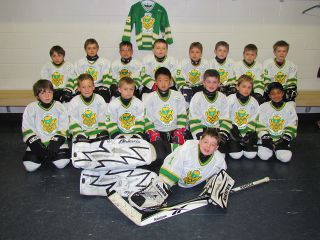
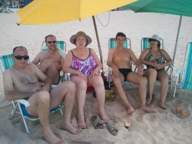
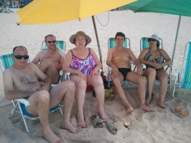
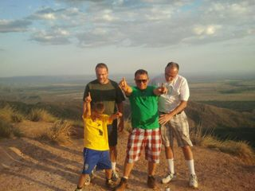
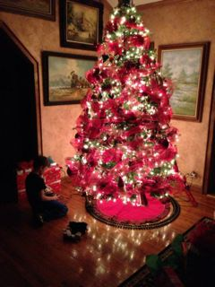

2012: Farewell Vovô Geovany and the New Wine Merchant

|
|
2012: Farewell Vovô Geovany and the New Wine Merchant |
|
Welcome to our 2012 year-end blog. It is also available in Portuguese. If you wish to catch up with previous editions you can find them here.
After the Christmas and New Year holidays in Oklahoma we were back in Edmonton for our traditional Christmas-after-Christmas party at home in January 2012. This year the guests included some of Daniel's closest friends: the German twins Deniz and Sinan, the Greek extraction Alexander N, and the half-Norwegian Sander, along with their siblings and parents. The house was full of laugh, playing and fun. Nothing says "Christmas" like a noisy house full of kids and the smells of a Christmas dinner. We were also happy that our great friend Fran could join us, likely for the last time for this traditional event, since she moved to Australia in March.
We dived right back into hockey season in January, which
lasted until the end of March. Not only Daniel was having
practices and games twice a week with his "Silver Bullets"
team, he also did additional "power skating" training and,

given that I had a VIP pass as a Senator for the University of
Alberta, me and Daniel were also going to almost every home
game for the University of Alberta's Golden Bears hockey
team. Daniel knew several of the players personally because of
his hockey Summer camps where the Golden Bear players are
coaches. We also went to several Oil Kings games at Rexall
Place, the home fo the famous Oilers team. One with his Silver
Bullets team, and several with his great friend Denis C. We
even saw the final of the Western Hockey League (WHL) where

the Kings took the cup. During the regular season he raised
up from being in the lower ranks of the team to being one of
the top players at the end of march. Then at the end of March
Daniel got a last-minute invitation to join the 2004
University of Alberta Jr. Golden Bear team. We jumped at the
opportunity and thus extended our hockey season all the way to

June. Sometimes with four practices in the same
weekend. Overlapping hockey with the Spring Soccer season was
challenging for scheduling and on the two daddies, but it was
well worth it. Daniel thrived on both sports.
Daniel's soccer team was formed mostly by his friends from grade 2. They went through half of the season without taking any goals. They kept being re-tiered up and playing farther and farther away from home to face tougher teams and they kept dominating the games. They finished the season at the end of June as the undefeated champions for the region where they played. This was great because his hockey team had lost most of their games. Thus it was a great balance and we saw Daniel becoming a much more gracious winner or loser of a game.
 |
All this investment in sport activities proved to be a very wise decision. Because the confidence that Daniel garnered from sports helped him in school. Daniel struggles academically because of his ADHD and learning difficulties. Before his success in sport his academic struggles were affecting his self esteem. But success in sport gave him great confidence and significantly improved his academic progress and his relationships in school. For instance, when his class went ice-skating, he was one fo the top skaters and was admired by all his classmates and teachers. My Spring academic travels took me to Boston and to Tallin in Estonia. I was very pleasantly surprised by Boston, a great city and Tallin is a fairly small but very charming European old capital with an old downtown and very nice modern buildings. I found Tallin to have a much more Scandinavian feel than I expected before going there. On my way back from Tallin, I managed to have dinner with my good friend Silvia in Amsterdam and it was nice to catch up with her. Then in the Summer I went to Beijing for my first visit ever to China. I stayed very close to the Bird Nest stadium and got to visit Tiannamen Square, the Forbidden City and a segment of the Great Wall. It was one of the most interesting trips that I took in a while. I was happy with the godd reception by my colleagues for one of my talks at a conference in Beijing. In the Spring we also were sad to have to say good bye to our great friend Fran Moore who left Edmonton to follow her husband to Australia. |
In the Spring I was also honoured to be invited to be the keynote speaker for the graduation banquet for the Computing Science class at the University of Alberta. This been the 100th aninversary of the birthday of Alan Turing, and I been the only openly gay professor in the department, I made the speech about the personal life and contributions of Alan Turing to Science. Turing is today regarded as the father of Computing Science. He has made great contributions to Science and played a decisive role in the Second World war. But he was also prosecuted for being gay, subjected to chemical castration by the British courts, and committed suicide before his 44th birthday. Turing also most likely suffered from Asperger's Syndrome. I made the speech about the need for acceptance and embracing of people that are different. The speech was very well received and regarded as one of the best graduation speeches ever by senior colleagues that were there.
In July we had our own version of ``family vacation.'' I dropped Daniel off in Dallas with his grandparents where he spend about ten days playing with his cousins and American friends and enjoying Summer activities. Scott went into a hiking and camping trip to the mountains in Alberta. I went on to Madrid where I was chairing the program committe for a conference. This time I rented an apartment instead of staying in a hotel and it was a great experience. Madrid was very nice in spite of all the street protests against the austerity measures and in spite of the fact that I was pick-pocketed and lost my credit cards.
The grandparents brought Daniel back to Edmonton in time for us to have his two traditional birthday celebrations. For his kids' party we brought back the idea of Grandma's store and Daniel Dollars, which was a great success now that all the kids could properly manage their money. Grandma Juana had some great ideas for carnival style games which made the party really fun, and Timur, Daniel's very successful soccer coach organized a soccer game during the party, which was much fun but tarnished by a cloud of Edmonton's only Summer super-sized mosquito!
After searching for several years, in June Scott found a suitable liquor store to buy so that he could go ahead with his project of owning his own wine store. We made the decision to acquire the store and set up the ownership transfer day for the end of August after our trip to Brazil. Ashton's Liquor is named after the son of the previous owner. The store was doing well mostly on liquor and beer sales before Scott took it over early in September. Scott has a great knowledge of wines as he has been studying wines for several years. He is now taking his third level of the Somellier training courses, which entails eight hours of wine-tasting classes every Sunday for a period of six months. This far Scott's approach to promote wines at the store has been a great success. People have been raving about the quality of the wines that he is bringing into the store, and he is focusing in a very reasonable price point (under Ca$ 20/25 price range). He was surprised by the volume of sales of higher-priced wines prior to Christmas. Meanwhile beer sales remain strong and had brought in some new scotch and vodkas that are selling very well. The life of a small-business owner is very busy and our family life has changed significantly. But it is great to see Scott very happy about his new enterprise.
In August, after Daniel's birthday celebrations, we went
to Brazil for vacations with my family. This time we flew to
 my brother's house in Brasília and from there we took a
vacation with my immediate family in João Pessoa in the
Northeast of Brazil. It was a great time to all of us. We
spent time in three different locations during the week,
everybody was happy and relaxed. After Joao Pessoa, Daniel,

Scott, and myself made a special trip to Cuiabá to go visit
our friends João and Otávio in Chapada dos Guimarães. We
had planned this trip almost a year in advance and our main
goal was to reconnect with Joao who Scott has not seem for 18
years (I saw João the year before in
Brasília). Unfortunately João decided to stay in São Paulo
in the last minute, thus frustating our efforts to reconnect
with him. Nonetheless we had a great visit with Otávio and
enjoyed his wonderful hospitality and to get to know a bit of
Chapada dos Guimarães. A beutiful location one hour outside
of Cuiabá.
my brother's house in Brasília and from there we took a
vacation with my immediate family in João Pessoa in the
Northeast of Brazil. It was a great time to all of us. We
spent time in three different locations during the week,
everybody was happy and relaxed. After Joao Pessoa, Daniel,

Scott, and myself made a special trip to Cuiabá to go visit
our friends João and Otávio in Chapada dos Guimarães. We
had planned this trip almost a year in advance and our main
goal was to reconnect with Joao who Scott has not seem for 18
years (I saw João the year before in
Brasília). Unfortunately João decided to stay in São Paulo
in the last minute, thus frustating our efforts to reconnect
with him. Nonetheless we had a great visit with Otávio and
enjoyed his wonderful hospitality and to get to know a bit of
Chapada dos Guimarães. A beutiful location one hour outside
of Cuiabá.

After the weekend in Cuiaba we went back to Brasília to
spend some quiet time with my mom, stepfather Geovany, my
brother Marco and his wife Fernanda. The day after we got to
Brasilia Scott developed a blood clot in his Safena and had to
be hospitalized for three days as a precaution. Thus Daniel
and I spent the rest of our vacation making visits to the
hospital every day. Nonetheless we had a good time and would
spend time with Geovany in the afternoon. Geovany was not too
well, but he was keen on going see Scott in the hospital and
to come and see Daniel play soccer with the Brazilian kids in
the house complex. Just a couple of weeks after we came back
from Brazil, Geovany had a stroke and died. We consider
 ourselves fortunate that we got to spend quality time with him
in what turned out to be the last few weeks of his life.
ourselves fortunate that we got to spend quality time with him
in what turned out to be the last few weeks of his life.
A great bonus of our visit to Brasília was that my brother's first grandson, Gael, was born while we were there and we got to visit with Tiago, Tatiana, and Gael.
Daniel's hockey league has a very structured one-month evaluation to assign players to different tiers. This evaluation includes both skating skills and game smartness. There are eight tiers with the top players in tier #1. Last year Daniel was in a tier 8 team. This year, after evaluation, he was slotted into a tier #3 team. The skill level in this team is much higher and almost all the dads were pretty good hockey players themselves when they were younger. They push their kids and take all things hockey very seriously. Scott and I are the odd guys in this group as we do not have hockey in our DNA.

|
In September I went to Minneapolis to attend an international conference where one of our papers, that resulted from research done by one of my students with an IBM team, was nominated for the best paper award. This work was with the new IBM Blue Gene/Q machine, the fastest machine in the world this year. Not only we got the best paper award, but my student, Matthew Gaudet, also received the gold medal (top prize) in the Association for Computing Machinery (ACM) student research competition. We were all extremely happy with the awards. |
|
Then in November, when I went to attend the Center for Advanced Studies Conference (CASCON) in Markham in Ontario I was surprised to have been selected as the 2012 Faculty Fellow of the Year by the Canadian Centre for Advanced Studies of IBM. Of course I was very happy with the recognition of the work done by my students in this very fruitful relationship with IBM. A big change this year around our house has been the arrival of a large contingent of undergraduate students from Brazil within the Science Without Borders (SWB) program. We started interacting with some of them soon after their arrival. There are about fifty of them and most are living accross the street from our house in the student residences. We grew very close to some of them. In September we had a large group for a welcoming party at our place. They enjoyed a typical Brazilian meal. I wish I had more time to interact closer with more of the students in this group. It is a great group of students. It also made our life so much easier because we could rely on some of them for child minding when we needed it in the occasions in which Scott had to be at the store and I had to be elsewhere. I am sure we will miss this group when they have to go back to Brazil in the Summer. |

|
At home we have been trying to help our next-door neighbor Dorothy cope with the routine necessities of life around a house. She is 80 now and lives by herself. It has been hard to watch her slowly becoming less able to do routine tasks. She has now decided to move to an assited-living place. Her move will greatly impact our life around the house as we have truely enjoyed her friendship and closeness for the past twelve years.
|  |
At the University I was extremely busy during the Fall term because I decided to teach all my courses in the Fall in order to be more flexible in the Winter and Spring to do research and to travel. Besides teaching, research, and student advising, I have also been very involved in University Governance as a member of the General Faculties Council and of the University Senate. At the department level I have championed the creation of joint graduate programs with Unicamp in Brazil. Although these roles consume time, they also allow me to have a much broader circle of relations and to be acquainted with a group that supports the university. Daniel and I are now in the airplane in our way to Oklahoma. This is the second day that we are trying to fly and are again delayed for more than three hours because of mechanical problems. It has been very frustrating, but we are coping well. We are looking forward to several relaxing days at Scott's parents house. Scott will not be able to join us because this is his first year with the store and the wife of one of his main employees is having a baby around Christmas. Thus Scott has to stay in Edmonton to make sure that the store remains open around the holidays. |
We hope that you are having great holidays with your family and friends.
Nelson, Scott & Daniel{kind=link}
{kind=link}
{kind=link}
{kind=link}